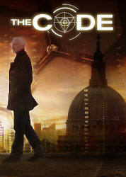
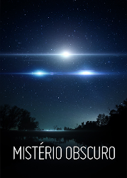

Crítica

The Code
The Code é um documentário da BBC produzido em 2011, que promete apresentar um código capaz de explicar eventos passados e futuros, através da compreensão de padrões numéricos que regem nossa vida. Mas será que a série, em três episódios, entrega isso?
Leia Mais

Misterio Obscuro
Unacklowledged, como é intitulado em inglês, é um documentário da Auroris Media de 1h40min onde são reveladas várias informações sobre a existência e aparições de OVNIs, assim como as conspirações para evitar o vazamento dessas informações. Em um assunto tão polêmico, será a abordagem séria e profunda o suficiente para prender o telespectador?
Leia Mais